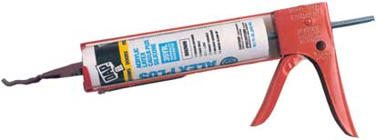
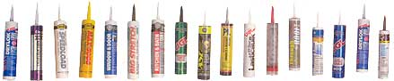
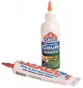
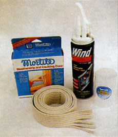

How To Choose The Best Caulk
Using caulk to seal cracks will help you save energy, avoid moisture damage and prevent pest problems. This article will help you find the best caulk for your project.
By Joe Hurst-Wajszczuk
October/November 2001
Caulk is a home-improvement hero. No matter how skilled the carpentry, there are always small cracks and gaps that need to be sealed around windows, cabinets, doors and sinks. Caulks help insulate, weatherproof and pest-proof your home by sealing those gaps. Caulks also excel in cosmetic repairs. After being painted, caulk-filled gaps and cracks disappear, making cabinets, counters and wood trim seem as if they just grew there.
Picking the best caulk can be the hardest part of any caulking job. Most hardware stores carry dozens of different products, each promising better results than the other. If you use the wrong caulk, the joint will fail long before it should, which means that you'll need to do the job all over again. Although some manufacturers now include helpful job-specific labels, others provide little information or overstate their products' performance. Here's how to pick the right product for whatever job is at hand.
Despite the dizzying selection, caulks are all made from one of four base, or backbone, polymers: latex, silicone, polyurethane or rubber. The base polymer determines specific characteristics, such as what materials it will adhere to, how easily joints can be smoothed, durability and paintability. Most caulks are sold in long tubes, and you apply them using an inexpensive, hand-pumped caulk gun.
Latex Caulk
Also labeled as acrylic caulk, vinyl caulk or sealant, water-based latex products are the easiest to use, the least expensive and handle the widest range of applications. Latex caulks don't contain volatile chemicals, which means you can smooth joints with a wet finger and clean up excess with soap and water. All latex caulks can be painted, or you can also find a wide palette of pretinted caulks.
Latex-based caulks fall into two sub-groups: less expensive acrylics and better-quality “siliconized” latexes. Acrylic latex is fine for sealing areas that won't face major temperature changes or high moisture levels, such as interior windows, doors and trim. Siliconized latex caulks contain a small amount of silanes (a form of silicone) to promote better adhesion. (This is not the same as 100 percent silicone caulk; see below.)
The best siliconized latexes are a good choice for heavy-duty work, such as exterior windows and doors, and caulking seams in kitchens and bathrooms, and to keep moisture out of walls and floors.
Silicone Caulk
Silicone sealants were first used to bond glass panels to skyscrapers - a far more demanding job than most home improvement projects. Because they stay flexible at all temperatures, are completely waterproof, bond well to almost everything and won't support mildew growth, silicones are used around sinks, tubs and shower stalls.
Silicones come in two types: neutral cure or acid cure. Acid-cure silicones work best on nonporous surfaces such as glass and glazed tile, but they can corrode metal and etch some plastics. Neutral-cure silicones work well on metal and wood.
Silicones aren't perfect. For starters, these caulks are hard to smooth, and most won't hold paint (one exception is GE's XST paintable silicone). If you need to recaulk, the old residue is almost impossible to remove.
Polyurethane Caulk
Polyurethanes excel as outdoor caulks. Since they are non-corrosive, extremely tear resistant and stick reliably to almost anything, they're a good choice for joints between dissimilar materials, such as metal-to-masonry joints around chimneys, wood-to-concrete joints at the sill plate, and masonry joints in driveways and concrete slabs.
Polyurethanes are not naturally ultraviolet resistant, so exterior joints should be painted or otherwise protected from sunlight. Tooling joints isn't as easy as with latex caulks, but easier than with silicones.
The biggest downside to this type is price: Polyurethanes are more expensive than most other caulks. Use them where strength, durability and weatherproofing are most important.
Rubber Caulk
These products are made with synthetic rubber compounds such as isoprene, butadiene, nitrile and styrene. Rubber caulks will also stick to almost everything (but they melt styrofoam) and will even work with damp and oily materials. Their biggest downside is their smell; the solvents used are highly flammable and dangerous to breathe. For that reason, this caulk should only be used outdoors. Another drawback is shrinkage: After the solvent evaporates, the bead can shrink by as much as 35 percent.
Laying a Perfect Bead
After you've decided what caulk to use, the perfect caulk job depends upon careful prep work and application. To clean old caulk and soap scum from tiles and porcelain surfaces, first use a razor knife or caulk remover. Then wipe down the entire surface with a residueless solvent, such as isopropyl alcohol. Remove any mildew with a solution of one part bleach to two parts water. For stone, brick and concrete surfaces, use a wire brush to remove dirt and crystallized minerals, then vacuum up loose debris. With wood, scrape away loose paint and old caulk, then prime any bare spots.
Most caulks are designed to be used between 40 and 90 degrees. On the lower end of their working temperature, most caulks get thick and difficult to squeeze out. To prevent this, keep the tubes indoors until you need them, or store them in an insulated cooler when working outside in the cold.
To start a tube, most pros cut the tip of the tube at a 45-degree angle, although some prefer a straight cut for caulking corners. Whichever style you choose, don't make the opening too big. Cut the tip where its diameter matches the width of the gap you're filling. Then poke a hole in the tip to release the caulk. (Most caulk guns have a handy fold-out tool for this.)
Caulked joints should have a concave shape, with thick sides to ensure good adhesion and a thinner middle to allow the joint to expand and contract. If the caulk sticks completely to the back of the crack it will be less able to stretch and more likely to pull away or tear. To prevent this, you can use a plastic foam backer rod in gaps over one-quarter inch thick. Available in several diameters, backer rods not only prevent sagging, they also provide extra insulation and save caulk.
To apply the caulk, the pros are equally divided between the push and pull methods. Pull advocates say their method produces a smoother bead, while caulk pushers claim their method forces more caulk into the joint. Whichever you choose, the key is to squeeze out an even, full bead that completely fills the crack. As you near the end of the joint, release the handle pressure to avoid excess.
Finish by smoothing the bead. This tooling does more than smooth the surface: It forces material into the gap, fills minor voids and pushes material against the sides to ensure good adhesion. The most common tooling device is your finger, but you can also use an ice cube, the back of a spoon or a commercial device. Whatever you use, try to tool the joint just once: Overtooling can remove too much material from the joint. Minor bumps can be trimmed off with a razor blade after the caulk has cured.
Get Your Caulking Gun
The Pros and Cons of All Kinds of Caulk
Type | Main Uses | Strengths | Weaknesses |
Latex |
|
|
|
| Silicone |
|
|
|
Polyurethane |
|
|
|
| Rubber |
|
|
|
|
 PHOTO: NATHAN HAM PHOTOGRAPHY These hardy tubes will help you save energy, avoid moisture damage and prevent pest problems. |
 PHOTO: NATHAN HAM PHOTOGRAPHY Choosing the right caulk for the job will help the caulk to be more effective and last longer. |
 PHOTO: NATHAN HAM PHOTOGRAPHY For small jobs, you can use a squeezable tube of caulking - no caulk gun required. |
|
 PHOTO: CHERYL LONG These removable caulks are good choices for sealing drafts around older, double-hung windows |
 PHOTO: CHERYL LONG For an extra-neat caulk job, mask both sides of the gap with painter's tape. As you caulk, maintain even pressure and keep the tip moving. |
|